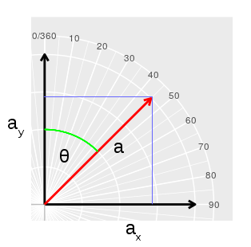

Introduction
We will focus today on 1) learning the different variable types we will work with in this class, 2) how MINITAB handles variable types, and 3) how to arrange data in MINITAB in the most convenient way for analysis.
Variable types as defined by a statistician
Fill in the tables on the first page of your worksheet. In the first table you will identify variable types that you are given. In the second table you will define variables of your own, and give examples of five data values that illustrate the variable type and measurement scale.
Variable types in MINITAB
Computers think very differently from us. They give the impression of being really smart, but this is an illusion - they are actually dumb, but they make up for their simple mindedness by being really, really fast. To the extent that a computer seems intelligent, it's because a talented and insightful human programmer has anticipated how you think and how you work, and has programmed the computer to work well with you.
But, there is only so much that even the best programmers can do for us - computers have some intrinsic limitations, and we need to understand those limitations so we can make the computer work correctly. Let's walk through a couple of these.
Variable types in MINITAB
MINITAB only distinguishes between numeric and "text" variables, but it doesn't distinguish between continuous numeric variables and discrete numeric variables, and it doesn't distinguish between ratio, interval scales, or circular scales. With numeric variables, this means that MINITAB will be perfectly happy to let us do things that are either pretty silly (like counting up the frequencies of continuous data points that are all unique), or wrong (like dividing two temperatures in °C or °F).
You will do some data entry and simple data summary today to help you
start learning how to use MINITAB, and will intentionally make some
common data entry and analysis mistakes so you can see why they are
problematic, and learn to avoid them.
1. Start up MINITAB. You should be able to find it under the Start menu (if you don't see it right away, start typing MINITAB into the search box and it will pop up).
When it starts you'll see a blank worksheet that looks like this:
Menu
bar Button
bar - quick access to often-used features Session window - all
text output appears here. Worksheet cells - where data is entered.
Worksheet
column numbers Worksheet column names - names of
variables are entered here (not a data row) Worksheet row
numbers - the first row of data goes in row 1
MINITAB is organized into two diferent windows (the Session window, and the blank Worksheet1 window), with button bars above the Session window, and a menu bar at the top. The Session window will be very important throughout the semester, because that is where most of the text output from the various procedures we run will be placed. The Worksheet is where we will start - worksheets hold your data. Worksheets are arranged in rows and columns.
If you have ever used a spreadsheet, like Excel, you might be used to being able to lay out data however you want, with data in blocks of cells with a label wherever you want to put it. MINITAB's worksheets look like Excel spreadsheets, but they are not as flexible. In MINITAB, each column can only be a single variable, and columns are assigned either text or numeric variable types. |
2. Give C1 a name - in the gray cell below C1 type "Percent growth". Column labels go in the gray cells above the first numbered row. If you accidentally put a label in the first data row, MINITAB will decide it's a text column and set the variable type to text.
We are going to enter some pretend data from a pretend experiment on plant growth (don't worry, we'll start working with real data soon). Enter the numbers 25, 28, 32, 41, and 26 in the first five rows of column 1.
With the data entered the worksheet should look like this.
Now, type "Growth" into the column 2 column name. Since these numbers are percentages it might be tempting to put in labels that indicate this - go ahead and enter 25 pct, 28 pct, 32 pct, 41 pct, and 26 pct (please use "pct", not the percent sign for the moment - I'm making a point here). Your worksheet should look like this.
Notice a couple of things have changed - first, there is now a T after C2 that wasn't there before (and that you didn't enter), and the data you just entered in cell C2 are left-aligned, whereas the data in C1 are right-aligned. This is because using the "pct" labels caused MINITAB to assume we want this column to be a "text" column instead of a numeric one.
Why does this matter? Let's see.
3. Now we will see what having the wrong column type does when we try to calculate an average of the data we just entered. From the menu system, select "State" → "Basic Statistics" → "Display Descriptive Statistics..." (like so).
In the window that pops up, you will see a list of the variables in your worksheet, but only the numeric version is displaying. Click into the "Variables" box, and then double-click on "C1 Percent growth" - this will add it to the "Variables" box.
In the box below the "Variables" box is a "By variables (optional):" box - a "by" variable defines groupings in the data. Click into this box, and you'll see that you now get both your percent growth numeric variable and the growth text variable in our list. This happens because MINITAB is smart enough to know it can't do math on text, so when you are in the "Variables" list selecting data with which you'll calculate a mean, it hides the text columns so you don't accidentally select them. MINITAB can use either text columns or numeric codes to group data, so when you click into the "By variables" box it shows you all the columns in the worksheet.
We don't actually have a grouping variable yet, just a numeric variable we mistakenly turned into a text variable, so leave "By variables" blank. Click on "Statistics", though, and un-check everything except for the Mean, and click "OK". Then click "OK" on the "Display descriptives" window to get your mean (report it in your worksheet).
4. So, we made a mistake in using "pct" when we entered the data, so let's fix it. We can't have "pct" in a numeric variable, so delete all the "pct" from the data (but leave the numbers).
You'll see that this isn't enough to fix the problem - you still have a T after C2, and the data are still left-aligned. Once MINITAB decides a column is text then even if every entry is a number they will still be considered text.
To convert the numbers back to a numeric variable, we need to select "Data" → "Change Data Type" (like this). Select "Growth" as the "Variables" entry (double-click on it, or select it once and click on the "Select" button), and leave the "Choose type:" menu set to "Automatic numeric", which will change the text to numbers. Click "OK" and MINITAB will convert the text Growth column to a numeric column, convert the numbers from text to numeric data, and put them back in the new, numeric Growth column.
5. Calculate the mean for Growth, using MINITAB (like we just did for Percent growth). MINITAB should now allow you to use Growth as numeric data, and the mean should be the same as Percent growth.
6. Let's work with an actual categorical variable now. First, add some more data to the Percent growth column - in rows 6 through 10, enter 43, 48, 45, 61, 53.
Now to make the categorical variable, type "Fertilizer" into the column name area for column C3, and enter "None" for the first five rows, and enter "Maracle Gro" for the next five. This is a categorical variable, so the variable name is "Fertilizer", and the levels are "None" and "Miracle Gro". Your data should look like this.
Calculate means again, but this time use Fertilizer as a "By variable" - this will cause MINITAB to group by the Fertilizer categories, and will give you a mean percent growth for None and for Miracle Gro.
7. You may already have accidentally happened into this next issue - computers are very, very literal. When you enter your Fertilizer groups, if there are any differences in the way you entered your None's, or your Miracle Gro's, instead of one mean for None and one for Miracle Gro, you'll have additional groups you didn't think you asked for.
Let's do this on purpose so you can see the issue.
- Add a space after the first "None" in row 1.
- Change the "None" in row 2 to "none" (make the N lower case).
- Add an extra space between "Miracle" and "Gro" in row 6.
- Use a lower-case "G" in row 7.
- Spell out "Grow" for row 8.
Now, calculate the means grouped by fertilizer again. You should see a different mean calculated for every alternative version of None and Miracle Gro in your data set. The space after the "None" is particularly annoying, because it looks no different on the screen from the other Nones, which makes it very hard to spot. Clearly, it's important to enter data consistently to avoid these problems.
None of these typos caused the variable type to be incorrectly assigned to the column, so you can just fix the typos before moving to the next step.
Note that MINITAB is more forgiving of the way you enter numeric data - as long as the numeric value doesn't change, entering 1, 1.0, 1.00, 01.00, and so on won't change the value that's recorded.
Measurement scales - proceed with caution
8. Now, let's enter another variable. Enter the variable name "Temperature" for C4, and then enter the data values 22, 25, 23, 28, 30, 21, 20, 20, 29, 26. These are meant to be temperatures in degrees Celsius recorded during this growth experiment.
Since the 0 doesn't mean "no temperature", temperature in Celsius or Fahrenheit are interval scale variables. Earlier in this exercise, you were warned that MINITAB doesn't make any distinction between the interval scale data (Temperature) and the ratio scale variable (Percent growth). Let's see what kind of trouble we can get into...
- Calculate means by fertilizer group for percent growth and for temperature (put both of the numeric variables in at the same time, and use fertilizer as the "by" variable).
- Now, using a calculator (or Excel, if you know how) do the mathematical operations asked for on your worksheet. Then, address whether they are valid with the variable type.
By default all text categorical variables are treated as nominal in MINITAB, and any time the levels are reported (on graphs, or in output in the Session window) MINITAB will usually put the levels in alphabetical order. It is possible in MINITAB to assign an order to the levels of a categorical variable, so that we can properly handle ordinal categories. We will learn how to do this in a later activity.
Data organization
So far we have been entering our data in a "stacked" arrangement, because each row in the worksheet holds the data for a single observation, and each column is a variable that was measured for that observation.
With all of stacked data's advantages, when you have a choice you should enter your data in a stacked arrangement. There are a few cases in which MINITAB will insist that you use un-stacked data, so there will be cases when you don't have a choice. When this is true, MINITAB at least makes it easy to un-stack a data set, which we'll try out now.
1. To unstack the columns:
- Select "Data" → "Unstack columns".
- In the window that pops up:
- Put "Percent growth" in the "Unstack the data in:" area.
- Put "Fertilizer" in to the "Using subscripts in:" area (MINITAB sometimes refers to levels of a grouping variable as "subscripts", so we're using the fertilizer grouping variable here).
- Keep the "Store unstacked data:" selection at its default value of "In new worksheet" - the unstacked data will be placed in a separate worksheet from the stacked data to avoid confusion.
- Click "OK".
You should now have a version of the percent growth data in "Worksheet 2", with "Percent growth_Miracle Gro" as one column name, and "Percent growth_None" as the other. The data haven't been changed at all, just re-arranged. Both columns are percent growth data, and both the group and the measured variable are indicated by the column name.
2. You can also stack data that is unstacked:
- Select "Data" → "Stack" → "Columns".
- In the window that pops up:
- Put both of the columns from Worksheet 2 into the "Stack the following columns" box. Note that MINITAB works on the worksheet that is active, meaning it's on top of the others - if you don't see the variable names from Worksheet 2, click on its title bar to activate it and try again.
- Leave "Store stacked data in" at its default value of "New worksheet" so you will get a separate worksheet with the re-stacked data.
- Keep the default setting "Use variable names in subscript column" - this means that a new grouping variable will be created, using "Percent growth_Miracle Gro" and "Percent growth_None" as levels.
- Click "OK".
You should now have a Worksheet3 with stacked data. You can name column C2 "Percent growth" - MINITAB didn't ask for a variable name, so you would need to supply one after stacking. You could also change "Subscripts" to "Fertilizer".
That's it! Answer the questions on your worksheet to complete the assignment.
Circular variables (optional - for the curious)
In the prep reading for today you learned about the need to use special methods when working with circular variables. The basic problem is illustrated in the graph to the left - each time you hit the "Randomize" button you'll get a sample of 10 directions that are clustered around 360/0. The "Mean angle" label shows where the average of the ten direction readings would fall, and most of the time it will be in the opposite direction of the data points. The "Mean direction" label shows where the mean falls when you use the correct method of working with circular data. Clearly, it matters whether you do it right.
However, the prep reading declined to explain what those special methods were. There are a couple of reasons for avoiding circular variables in an introductory class like this:
a) even simple things (like calculating averages) become complicated with circular variables, and
b) MINITAB has essentially no built-in support for working with circular variables.
Yet, circular variables do turn up fairly often. Since time of day, day of the year (that is, date expressed as numbers of days since 1/1), angles, and directions are all circular variables, no matter what area of Biology you pursue you will probably encounter at least a few of them.
If you're curious about how we handle circular variables, you can work through calculations of averages for two different circular variables, directions and time of day, below.
Direction data1. Label column C4 "Directions". Enter the numbers 345, 350, 1, and 10 in the first four rows. Just like in the reading, these numbers are clustered around 0/360 degrees, and although the average direction should be close to 0 the average of these four numbers is 345 + 350 + 1 + 10 / 4 = 176.5, which is pointed away from the data. We solve this problem by expressing the directions as vector components, which requires a little basic trigonometry. To review: |
| 
We can graph an angle equal to θ as a line segment, the red line a, starting at the origin of the graph and with the tip placed such that the angle between a and one of the axes is θ (the y-axis is the 0 degree base line in this example). If the origin is at 0,0, then ax is the x-coordinate, and ay is the y-coordinate for the tip of the red arrow at the end of the line segment a. The triangle formed by a, the y-axis, and the blue line at the top of the graph is a right triangle, so we can use some basic trigonometry to find ay and ax. We know that sin(θ) = opposite/hypotenuse, which is ax/a. We can set the length of the red line, a, equal to 1, which means that sin(θ) = ax/1 = ax. We call ax the x component of θ. Likewise, we know that cos(θ) = adjacent/hypotenuse, which is ay/a = ay. We call ay the y component of θ. |
We can also calculate θ from the x and y components, because we know that:
tan(θ) = opposite/adjacent = ax/ay
Solving for θ is done by taking the arctangent:
θ = atan(ax/ay)
Armed with this knowledge, to get a mean direction we just need to:
- Calculate the sin of each direction to get x-components
- Calculate the cos of each direction to get y-components
- Calculate an average of the x-components, and an average of the y-components
- Calculate atan(average of x components/average of y components) to get the mean angle
Simple, no?
2. Calculate the sin of each direction. MINITAB can do this for you:
- Select "Calc" → "Calculator"
- Enter "Sin direction" in "Store result in variable" - MINITAB will label the next blank column "Sin direction" and put the results of the "Expression:" we build in the next step there.
- The "Expression:" field is the formula we will use to do the calculation, and we can use functions from the "Functions" list, as well as columns of data to define the calculation. Find the function "Sine" in the "Functions" list and double-click it to add it into the "Expression:" field. You'll see that the "Expression:" field now says "SIN(angle in radians)", and the "angle in radians" part is a prompt to tell you what needs to entered in the parentheses of the function.
- We don't have angles in radians, we have them in degrees, so we need to put a function inside of the "SIN()" function that will do the conversion for us. Find the function "Radians" in the "Functions" list and double-click it your expression should now read "SIN(RADIANS(angle in degrees))", with the "angle in degrees" part selected for editing.
- Double click on the "Direction" column name to make it replace the "angle in degrees" within the expression. The expression is now set to convert the directions from degrees to radians, pass the directions in radians to the sin function, and put the results into a new column called Sin direction.
- Click "OK" to do the calculation.
You should now have a column, Sin direction, with the sin of all four directions from the Direction column.
3. Calculate the cos of each direction. Everything is the same as the sin calculation, but change the "Store result in variable" entry to "Cos direction", and change the expression to use "COS" instead of "SIN" (you can just edit the existing expression to make the change).
4. Calculate the means of the sin and cos columns. Select "Stat" → "Basic statistics" → "Display descriptive statistics", and then put the sin and cos columns in as "Variables". You can double-check that "Mean" is selected in the "Statistics" settings.
You should get a mean for Sin direction of -0.0603 and for Cos direction of 0.98385 in the "Session" window.
5. Calculate the mean angle. Again, you can use MINITAB's calculator for this:
- Set "Store result in variable:" to "Mean direction"
- Use the expression DEGREES(ATAN(-0.0603/0.98385)) - ATAN calculates the mean angle in radians, and then DEGREES converts the result to degrees.
This should give you an answer of -3.50726
Note that the arctangent function doesn't give a unique solution, so the final step is:
- If sin(θ) and cos(θ) are both positive, then the answer is already the mean angle.
- If cos(θ) is negative, then the mean angle is the answer plus 180 degrees (it doesn't matter what sin(θ) is)
- If sin(θ) is negative and cos(θ) is positive, the mean angle is the answer plus 360 degrees.
Since the mean sin direction was negative and the mean cos direction was positive, we need to add 360 to get a mean direction of 360 - 3.50726 = 356.49, which is right where it needs to be, close to 0/360.
Time of day
|
Imagine you had data on the time that four babies were delivered in a hospital of 11:15 pm, 11:59 pm, 12:30 am, and 1:15 am, what is the average time they were born? We can visualize the problem more easily by expressing the times on a 24 hour clock, with the birth times at 23:15, 23:59, 0:30, and 1:15. On a 24 hour clock it's clear that time is a circular variable, and that these birth times cluster around midnight, with two birth times before midnight and two after. You would again be working with a circular variable with values that are clustered around the point at which the numbers reach their maximum and start over. If you took a simple average of the birth times, the babies born at 0:30 and 1:15 place the average some time around 12:00, which tells us the average is around lunch time instead of at midnight. The basic process for averaging these times is the same as for directions, except that we don't have the luxury of having the data recorded on a 360 degree scale already. Instead, we have times in hours and minutes, with 24:00 hours as a maximum value instead of 360. Having hours and minutes adds an additional twist, because our calculation methods assume we have decimal numbers. We need to do some unit conversions before we can calculate the average time. |

{kind=link}
{kind=link}
{kind=link}
{kind=link}
{kind=link}
1. First, we need to convert the times from hours:minutes to a decimal representation. This is actually pretty simple, we just need to express the minutes as a proportion of the largest number they can be, which is 60. Do the following:
- Enter the data in two separate columns - label C8 "hour" and only enter the hours part of each time. Label C9 "minutes" and enter the minutes part of each time.
- Open the calculator, and use "Decimal time" as the "Store result in variable:"
- For the "Expression" use: "hour" + "minutes"/60
You should now have time expressed as decimal numbers (23:15 becomes 23.25, 0:30 becomes 0.5, and so on).
2. Next, we need to scale our 24 hour clock to 360 degrees.
Start up the calculator again, set the "Store result in variable" to "Angular time", and use the expression:
360 * "Decimal time" / 24
Dividing decimal time by 24 expresses time as a proportion of a 24 hour day. Proportions fall between 0 and 1, and multiplying by 360 gives us an angle that is the same proportion of 360 that our birth time was of 24 hours. Doing this scales the times to numbers between 0 and 360.
3. Now that you have time expressed as angles you can proceed as you did with the direction data:
- Calculate the sin of angular time (don't forget to convert to radians!)
- Calculate the cos of angular time (radians!)
- Calculate the mean of each - if all goes well the mean of sin time is 0.063, and the mean of cos time is 0.9798
- Calculate the mean angle - the arctangent of 0.063/0.9798 (converted to degrees) is 3.67 degrees. Since both sin and cos are positive this is the mean time in degrees.
Finally, to convert the mean time from degrees back to decimal time, use:
24 * 3.67899 / 360
This does the reverse of the conversion from decimal time to degrees - dividing the mean time angle by 360 puts it between 0 and 1, and multiplying by 24 puts it back between 0 and 24 hours. You should get a decimal time of 0.245266, which is after midnight but before 1:00.
Converting decimal minutes back to minutes is done by multiplying 0.245266 x 60 = 14.7, or right around 15 minutes after midnight.
Take-home message for circular variables:
They require special treatment, and even simple things (like calculating an average) are not so simple. MINITAB doesn't do much to help us with them. So, be aware of what they are, recognize them when you see them, but we won't be working with circular variables further for the rest of the semester.